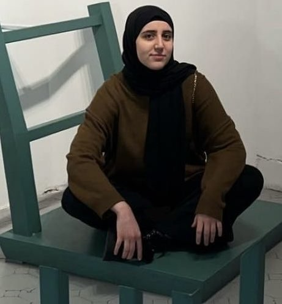

Romain Markowitch
Student at the University of Brussels, Belgium
Master 1 student in Computer Sciencess
Worked DAGP in polyominoes.

Fatima Ouchen
Student at the University of Brussels, Belgium
Master 1 student in Computer Sciences
Worked on Geodesic Distance, DAGP algorithm, Art Gallery Problem.
Rodolphe Prévot
Student at the University of Brussels, Belgium
Master 1 student in Computer Sciences
Worked on AGP, DAGP algorithm. Responsible for website creation.
Noé Vekemans
Student at the University of Brussels, Belgium
Master 1 student in Computer Sciences
Worked on DAGP in polyominoes.